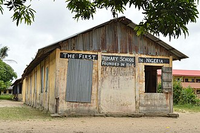

A school is both the educational institution and building designed to provide learning spaces and learning environments for the teaching of students under the direction of teachers . Most countries have systems of formal education, which is sometimes compulsory. In these systems, students progress through a series of schools that can be built and operated by both government and private organization. The names for these schools vary by country (discussed in the Regional terms section below) but generally include primary school for young children and secondary school for teenagers who have completed primary education. An institution where higher education is taught is commonly called a university college or university.
First primary school in Nigeria, built in 1845